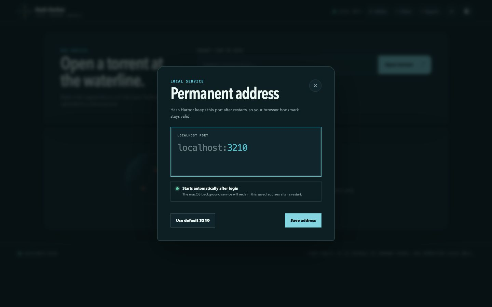

Stream and download permitted torrents in a clean browser interface. The engine runs
on your computer, the address stays predictable, and no cloud torrent backend is
required.
A browser interface with a real torrent engine behind it.
Hash Harbor is not a hosted downloader. The page is served by a native process on your
machine, so ordinary BitTorrent peers work without sending the torrent through somebody
else’s server.
01Run the launchernpx hash-harbor
02Start the native enginemacOS · Linux · Windows
03Open your permanent addresslocalhost:3210
04Stream or downloadEverything stays on your machine
Made for the actual file
Open the torrent. Then choose what happens next.
Metadata, peers, progress, playback, and every file live in one compact interface.
Stream first
Play supported media while the rest downloads.
Video and audio get full playback controls. MKV and AVI files can be converted for
browser playback when FFmpeg is installed.
Seek, pause, volume, and fullscreen controls
Preview images, text, and PDF files
Download one file without unpacking the whole torrent
The default address is always localhost:3210. Change the port in settings
when you need to—Hash Harbor never silently moves somewhere else.
B
Install once. Start with your Mac.
The macOS background service makes your localhost bookmark available again after a
restart, with status and stop commands when you want control.
C
Know what the swarm is doing.
See peers, transfer speed, received bytes, file count, and useful metadata errors
instead of staring at an unexplained zero.

Your machine, your address
Localhost that behaves like an app.
Open it in any modern browser, bookmark it, and keep the browser UI separate from the
engine doing the transfer. Closing a tab does not move your settings to a remote server.
Default harborlocalhost:3210
HTTP listener binds to 127.0.0.1 only
Quick start
From zero to localhost in one command.
You need Node.js 20 or newer. The launcher selects the right native binary, verifies its
checksum, starts Hash Harbor, and opens your browser.
Keep it ready after macOS restarts
$ npx hash-harbor install-service
Check the local engine
$ npx hash-harbor status
Choose a different permanent port
$ npx hash-harbor config --port 3210
!
Local does not mean anonymous
Torrent peers can see your public IP address.
Hash Harbor does not include anonymity or a VPN. Use it only for files you have permission
to access and share, and apply the same network precautions you would use with any torrent
client.
The practical questions
Before you run it.
Does Hash Harbor upload my torrent to a cloud server?
No. The web interface talks to the native engine on your own machine. Torrent traffic
still travels between you and peers on the BitTorrent network.
Why not run the torrent engine entirely inside the browser?
Browser-only clients are limited to WebRTC peers and compatible web seeds. The native
engine can use ordinary BitTorrent TCP, UDP, trackers, and DHT, which makes normal
magnets much more likely to work.
What happens when I change the localhost port?
Hash Harbor validates and saves the new port, restarts its local listener, and
redirects your browser. It does not fall back to a random port.
Do I need FFmpeg?
Only for converting formats such as MKV and AVI for browser playback. Torrent
metadata, downloads, and browser-native media formats work without it.